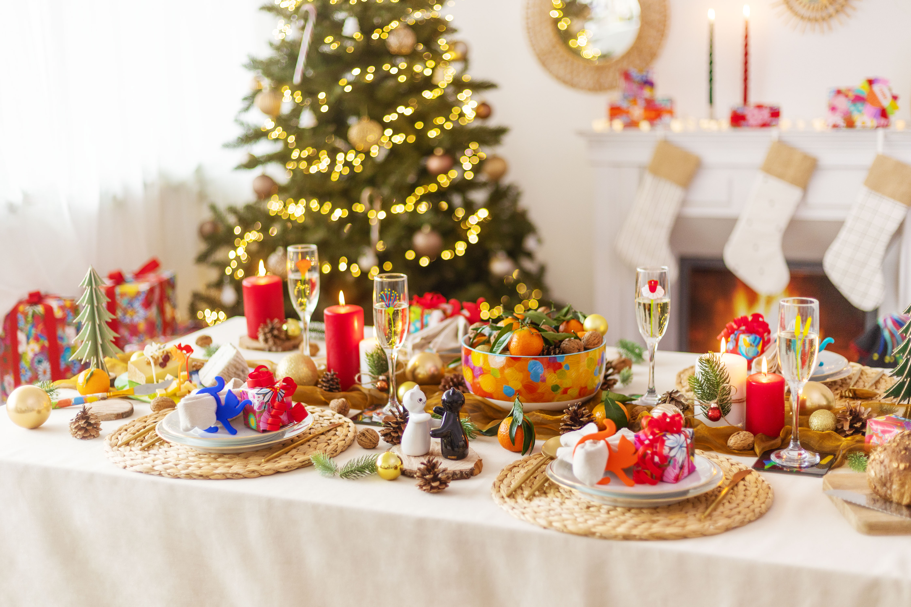

TENDENCIAS DE DECORACIÓN 2025
La comida es importante, pero el ambiente lo es todo. Este año, las tendencias se alejan de lo saturado y buscan un estilo más cálido y natural.
Colores Naturales
Dile adiós al plástico brillante. Este año predominan los verdes olivo, tonos madera, blancos cremosos y toques dorados mate.
Centros de Mesa Comestibles
Usa frutas reales como granadas, manzanas y ramas de canela para decorar la mesa. No solo se ve hermoso, sino que aromatiza el comedor de forma deliciosa.
Iluminación Cálida
Evita la luz blanca fría. Usa muchas velas (o velas LED) y series de luces amarillas para crear una atmósfera acogedora tipo "hogar de película".